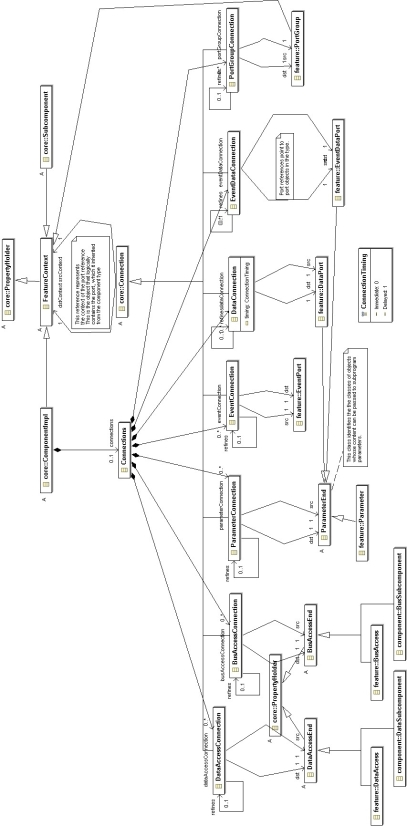

Previous
Next
Previous
Next 
| 4.7 Features |
The abstract Feature class represents AADL features.
This class is a subclass of PropertyHolder
as well as NamedElement. An abstract subclass AbstractPort represents ports, port
groups, and
parameters, i.e., all features that represent connection points for flow of data or events. Port
itself
is an abstract class representing data ports, event ports, and event data ports.
Concrete subclasses of the Feature class represent each
of the different feature types in AADL.
These classes are DataPort, EventPort, EventDataPort, Parameter, Port Group, BusAccess, and
DataAccess. The class hierarchy of features is shown in Figure 20. The concept of an aggregate
data port is not represented as a separate class, but through the Aggregate_Data_Port
property on the port group. The figure also shows port group types, which will be elaborated in
Annex C.4.8.
Port, parameter, and access features have a direction attribute.
In the case of ports and
parameters it is an enumeration value of type PortDirection. In the case of data or bus access
it is
an enumeration value of type AccessDirection.
All features except event ports have classifier references.
These are represented by a single-valued
reference association to the appropriate category-specific component classifier, or in the case of a
port group to a port group type. This reference is optional and can refer to either a component
type
or component implementation to accommodate incomplete declarations in AADL.
Feature refinement is represented by an association of
a feature class to itself to represent the fact
that a feature refinement can only refine a feature of the same concrete class.
Component category specific feature classes have containment
associations to each concrete
feature class that is acceptable content for the component category according to the AADL legality
rules. For application software components these are shown in Figure 21. For example, a
data
component type can only contain those features that are specified as by containment association
for the DataFeatures class, i.e., Subprogram and DataAccess. SoftwareFeatures
is an abstract
class that defines the allowable features for its concrete subclasses for threads, thread groups,
process, and system.
Figure 22 shows the containment constraints of features
for the execution platform component
categories.
The containment association name reflects the concrete
feature class resulting in its use as an
XML element tag for the feature. An ordering relationship is maintained across the concrete feature
subclasses to record the declaration ordering (see Section Annex C.4.6).

Figure 20 Features

Figure 21 Software Category-Specific Feature Containment

Figure 22 Execution Platform-Specific Feature Containment

Figure 23 Port Connections